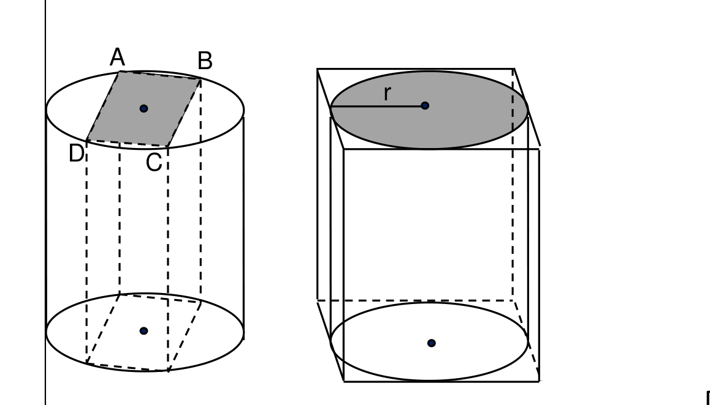

גאומטריה לכיתה ח'
11
3
נתונים שני כלים:
I — גליל בתוך תיבה (r = 5, h = 12).
II — תיבה ריבועית בתוך גליל (ABCD ריבוע שצלעו 8 ס"מ, h = 12).
חשבו את נפח הגליל ואת נפח התיבה בכל כלי.
I — גליל בתוך תיבה (r = 5, h = 12).
II — תיבה ריבועית בתוך גליל (ABCD ריבוע שצלעו 8 ס"מ, h = 12).
חשבו את נפח הגליל ואת נפח התיבה בכל כלי.

נפח הגליל ב־I:נפח התיבה ב־I:נפח הגליל ב־II:נפח התיבה ב־II: